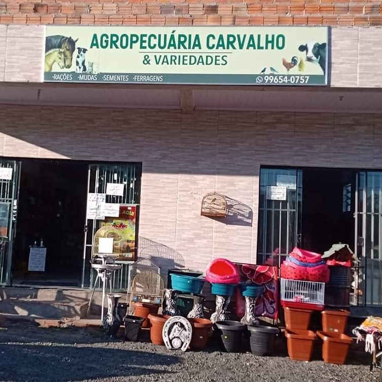
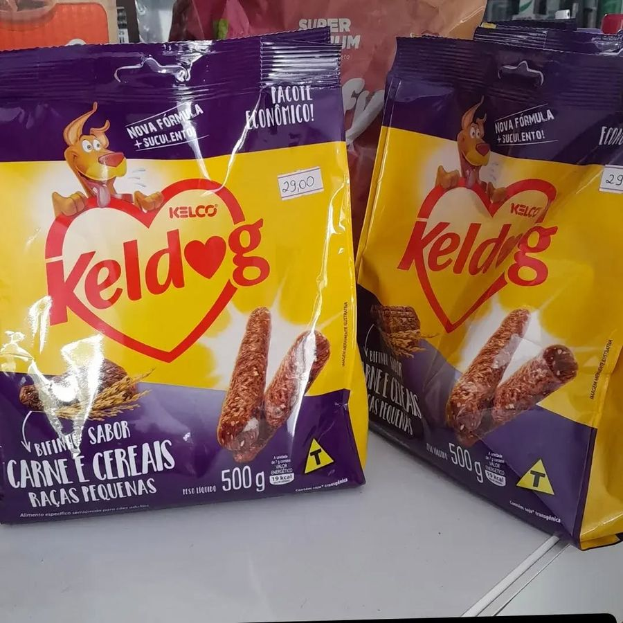
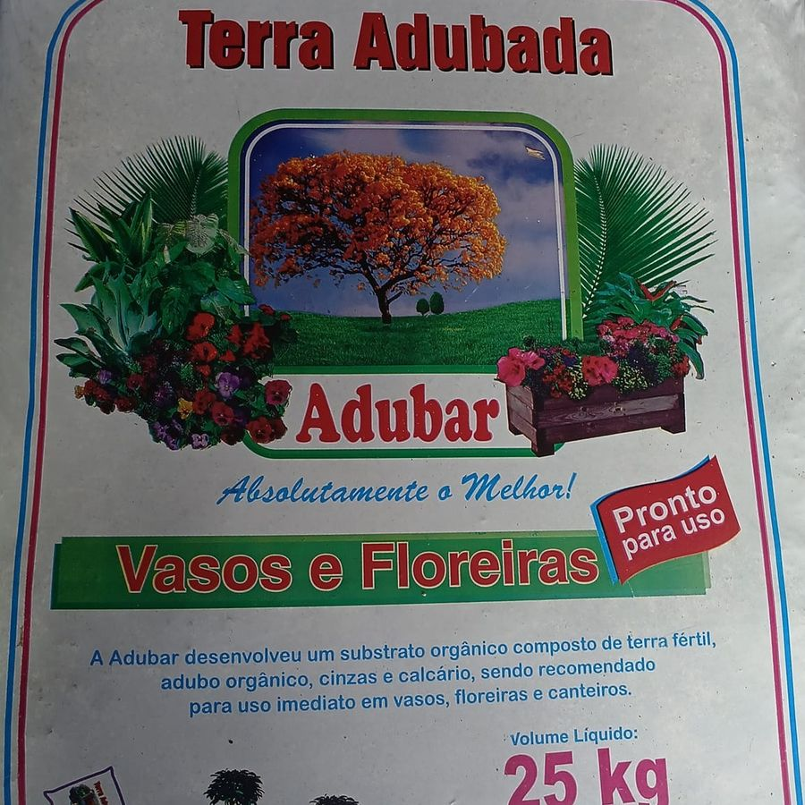
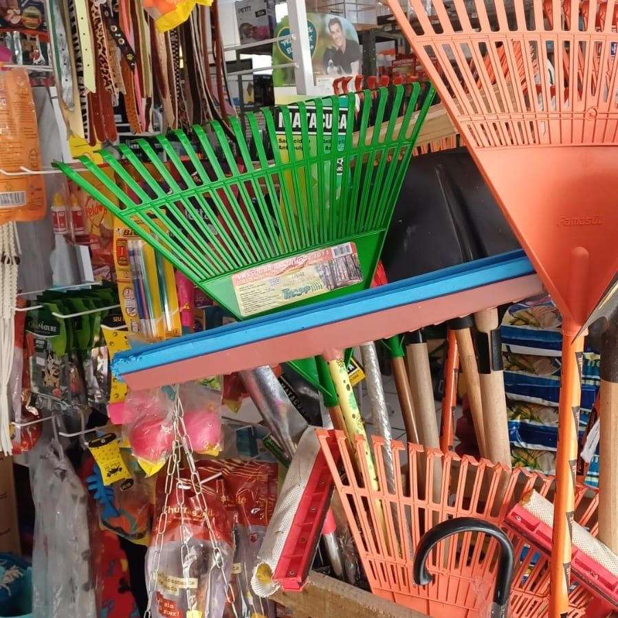
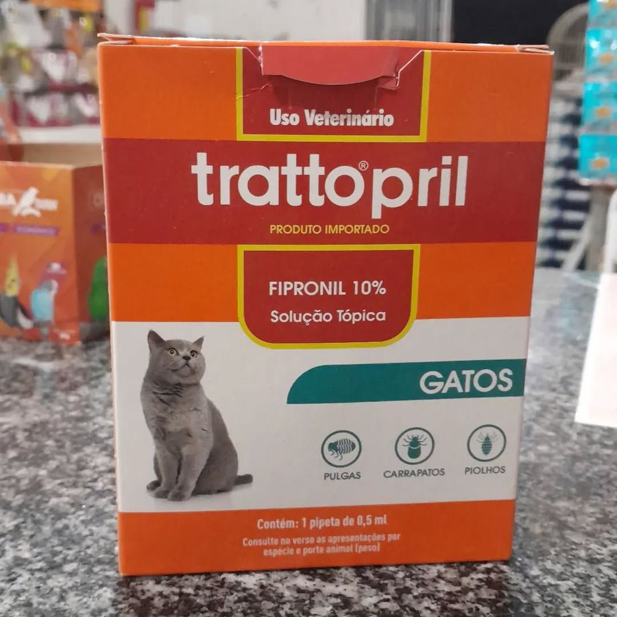

Rio Maina · Criciúma/SC
Tudo para o seu pet, o seu jardim e a sua casa
Há mais de 13 anos atendendo a comunidade, agora com tele-entrega. Chame no WhatsApp para saber a disponibilidade dos produtos.
- 13+ anos de loja
- Tele-entrega na região
- Atendimento pelo WhatsApp

O que você encontra
Produtos para o dia a dia
-

Pet
Rações, petiscos e antipulgas para cães e gatos.
-

Jardinagem
Mudas, sementes e terra adubada para vasos, floreiras e canteiros.
-

Ferramentas e utilidades
Ferragens, ferramentas e utilidades para a casa e o quintal.
-

Uso veterinário
Produtos de uso veterinário para o cuidado dos seus animais.
Não achou o que procura? Pergunte no WhatsApp: temos muitas outras variedades na loja.
Tele-entrega
Peça sem sair de casa
-
1
Chame no WhatsApp
Diga o que você precisa. A gente confirma se tem na loja.
-
2
Combine a entrega
Informe o endereço e acerte os detalhes do pedido.
-
3
Receba em casa
Seu pedido chega até você, sem precisar sair.
Onde estamos
Venha conhecer a loja
Rua Virgílio Mondardo, S/N — WosocrisRio Maina, Criciúma/SC · 88818-160
WhatsApp: (48) 99946-5897
Abrir no Google Maps